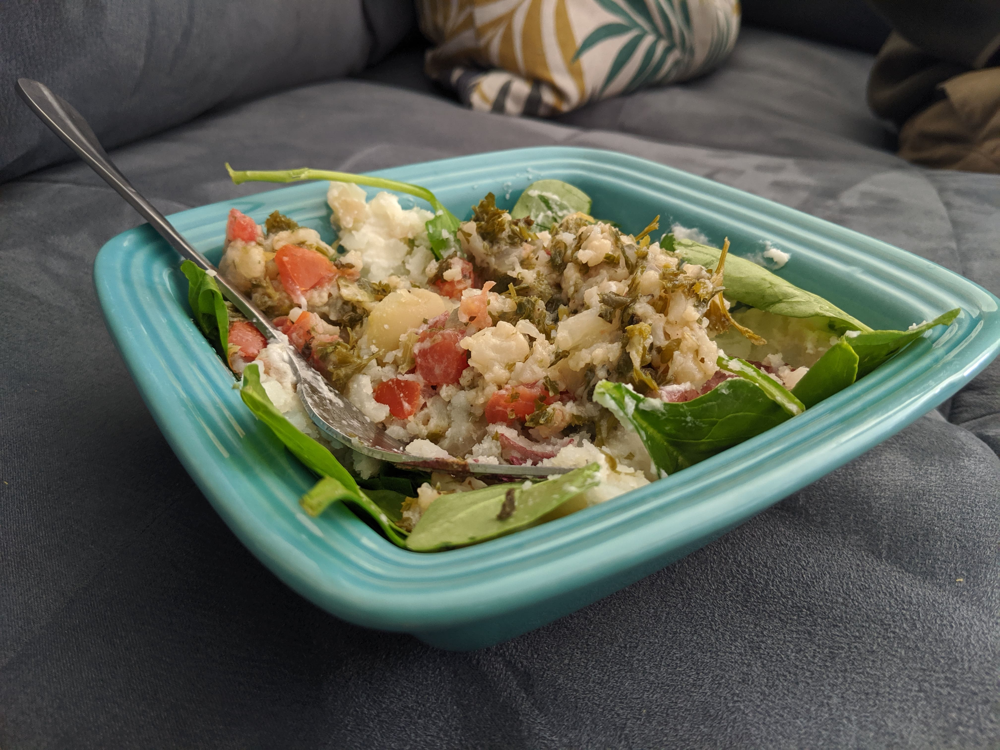

Steamed Potatoes and Spinach Topped with Cauliflower Tabbouleh
The trick to this quick meal is buying cauliflower tabbouleh already made (at Trader Joe's)
Ingredients:
- Gold or red potatoes
- Spinach
- Oil
- Salt
- Cauliflower Tabbouleh (or any kind of tabbouleh you prefer)
- Steam your potatoes in the instant pot: about 10-15 minutes on high depending on the size of pototoes
- Once the potatoes can be easily pierced with a fork:
- Put them in a bowl and mash them up with a fork with a little oil and salt.
- Then mix in your spinach
- And top with the cauliflower tabbouleh
- Enjoy your delicious meal made with minimal cooking time!